In detail
The changes worth a screenshot.
The calendar learns hours: week view new
The month grid answers “what’s happening this month?” but not “is Tuesday 10–12 free?”. Week mode does: a Month / Week / Timeline toggle in the calendar header, an hourly grid with each booking block positioned at its time, and an all-day lane on top for milestones and untimed entries. Clicking an empty hour opens New Booking with the date and that hour prefilled — and the live conflict advisory from 1.6.0 reacts immediately.
Every slot is keyboard-reachable too — tab to an hour and press Enter.
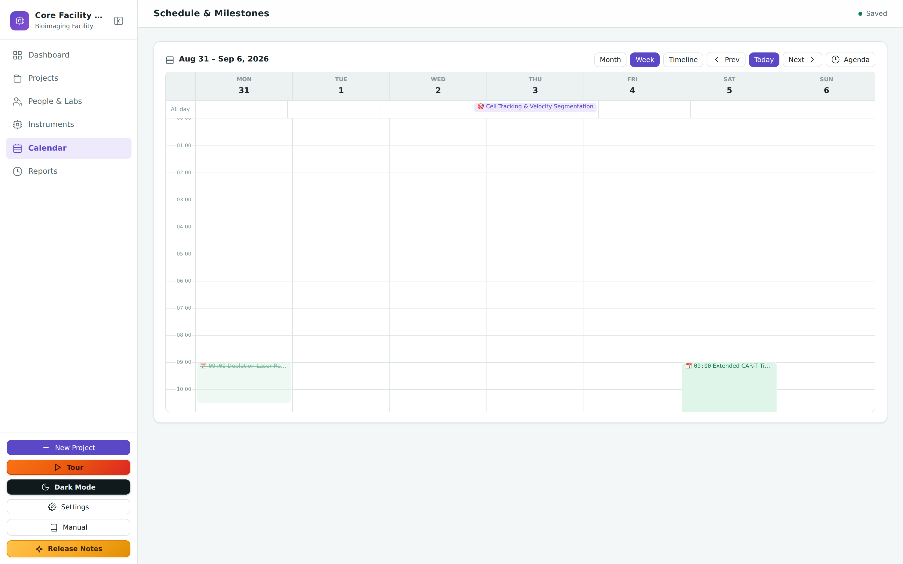
docs/screenshots/56-week-view.pngTimeline: where every machine is busy new
The third calendar mode turns the same week sideways: one lane per instrument, booking blocks where it’s held. A session on two instruments appears in both lanes — both were genuinely occupied — and a retired instrument keeps its lane while it still has history in view. Clicking a free slot opens New Booking with the date, the hour, and that instrument already selected.
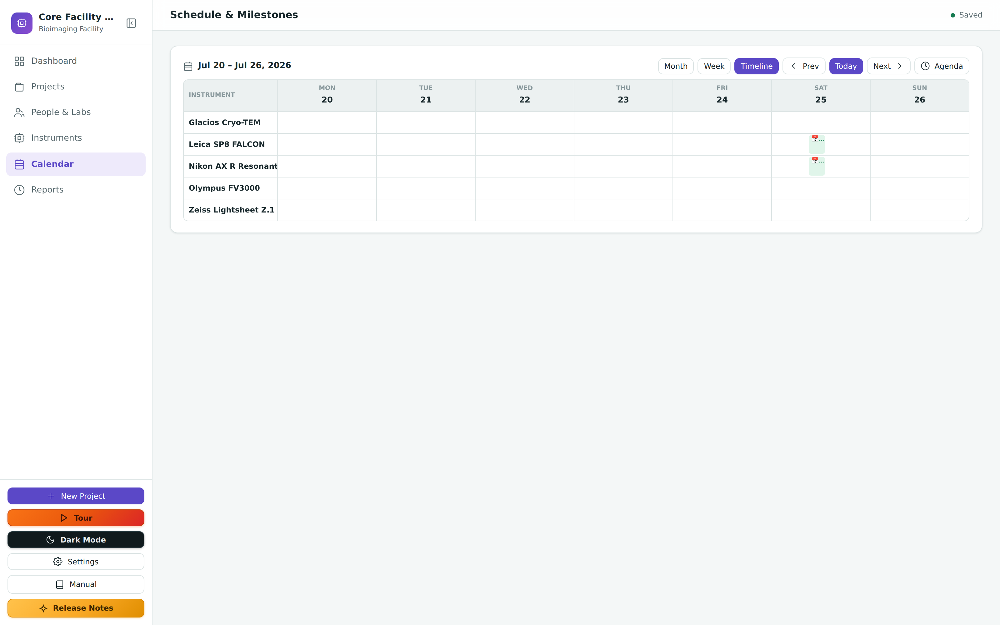
docs/screenshots/57-resource-timeline.pngInstruments set their own booking rules new
A cryo-scope that needs a day’s notice, a screening system nobody should book for ten minutes, a laser that wants a cool-down gap — each instrument now carries its own rules: minimum and maximum session length, minimum gap between bookings, minimum advance notice. They live inside the same conflict check that powers the as-you-type warning and the save button, so the advisory, the hard gate, and reinstating a cancelled booking all enforce them identically.
Editing an old booking without touching its schedule still saves — the notice rule guards new scheduling, not history.
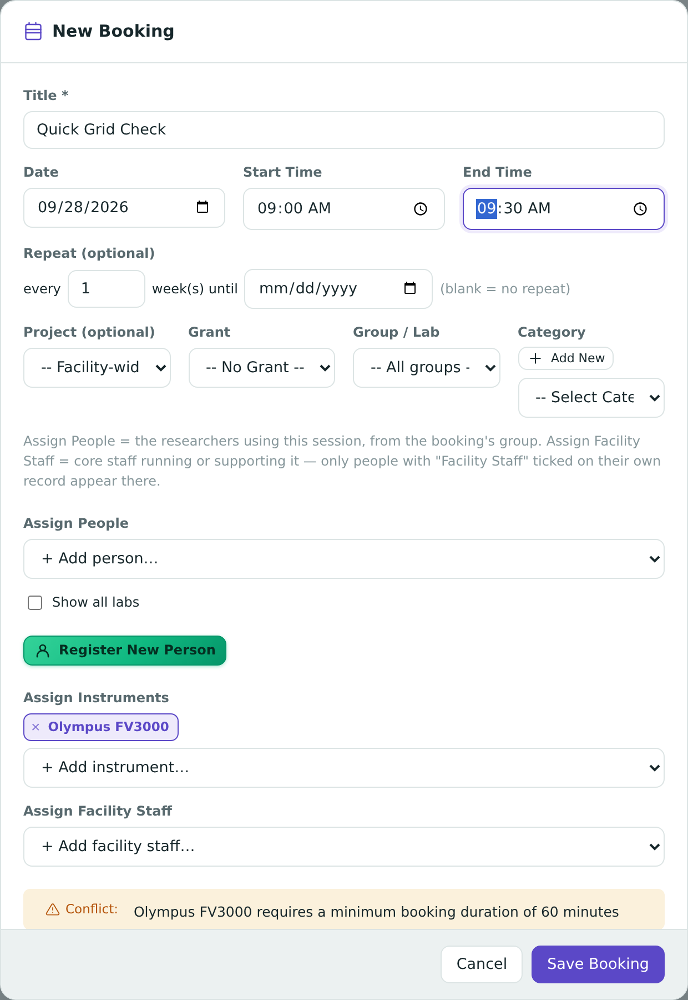
docs/screenshots/58-booking-constraints.pngRecurring bookings, checked before they exist new
A weekly imaging slot is one form now: “repeat every N week(s) until” a date. Every occurrence is conflict- and constraint-checked before anything is saved — if week 3 collides, the whole series is refused with the date named, so a half-created series can’t happen. Deliberately, there is no “series” object: each occurrence is an ordinary booking you edit, cancel, or reinstate on its own, under the same billing rules as any other.
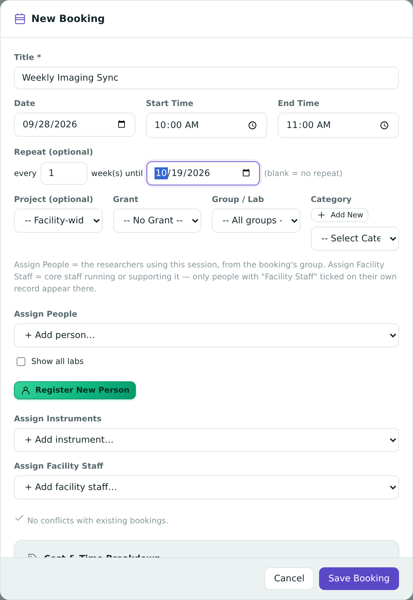
docs/screenshots/59-recurring-booking.pngPricing tiers replace the one-size overhead new
Until now every booking paid the same overhead — the internal and external percentages, summed. Facilities don’t price that way: internal labs, academia, and industry each get their own list. Pricing tiers are named lists with their own overhead percentage, assigned per lab; an instrument can carry a different hourly rate per tier. The old percentages migrate into two default tiers, and a lab with no tier assigned prices exactly as before — nothing changes until you say so.
Money already billed is untouched: cost snapshots are frozen at save, and each booking records which tier priced it, so history stays auditable.
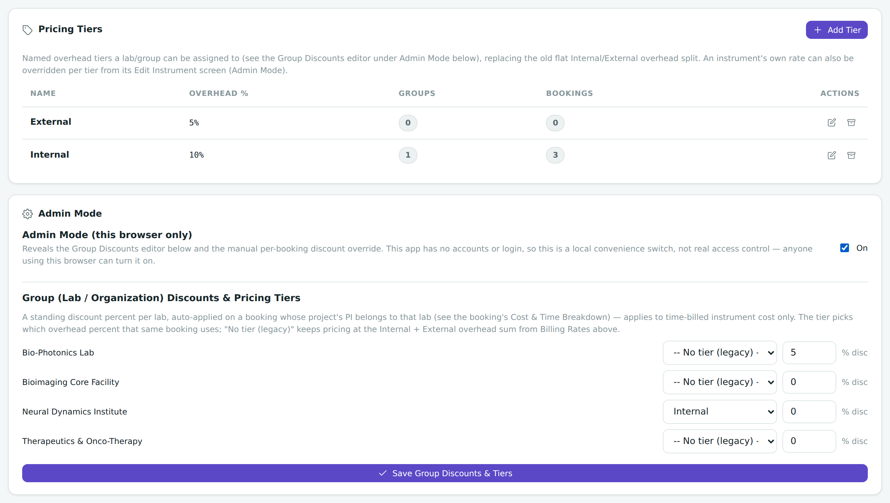
docs/screenshots/60-pricing-tiers.pngService entries: billable work without a booking new
Technician time, sample prep, a per-unit charge — real facility work that never held an instrument slot had nowhere to be billed. Service entries fix that: staff, optional instrument and project, grant, quantity × rate, logged from a project’s Costs card or facility-wide from Reports. They follow the same money rule as bookings — a cancelled entry’s charge counts only if it was retained — and appear in Project Costs, Reports, and every XLSX/DOCX/PDF export.
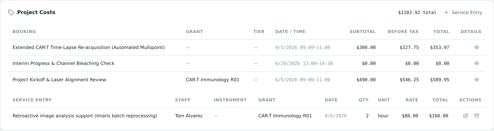
docs/screenshots/61-service-entries.pngThe booking form warns you before you clash 1.6.0
Double-booking has always been blocked — at save, after the whole form was filled in. Now the same conflict check runs as you type: pick a date, a start and end time, an instrument or a staff member, and the form immediately says whose booking you would collide with, or shows a quiet all-clear once times are set. Nothing is blocked early and nothing new decides what a conflict is — the advisory calls the very function the save button enforces, so the warning and the block can never drift apart.
Editing an existing booking excludes itself from the check, and a half-filled form shows nothing rather than a premature “no conflicts”.
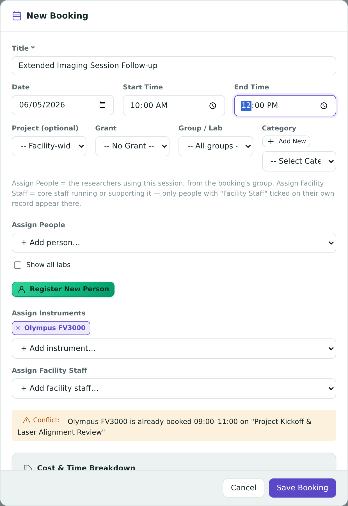
docs/screenshots/52-live-conflicts.pngGrants: the number the invoice reconciles against 1.6.0
Facility charges are ultimately paid from a grant, and until now the app only knew that as free text on a project. Grants are proper records now — name, number, and the people allowed to charge against them — managed from a Settings card, picked from a dropdown on projects and bookings, and carried into Project Costs and every XLSX, DOCX and PDF export so a monthly statement can be reconciled line by line.
- A Settings toggle chooses whether grants display by name or by number — one switch, applied everywhere at once, exports included.
- A grant referenced by any project or booking is retired, never deleted — the same history-preserving rule people and instruments already follow.
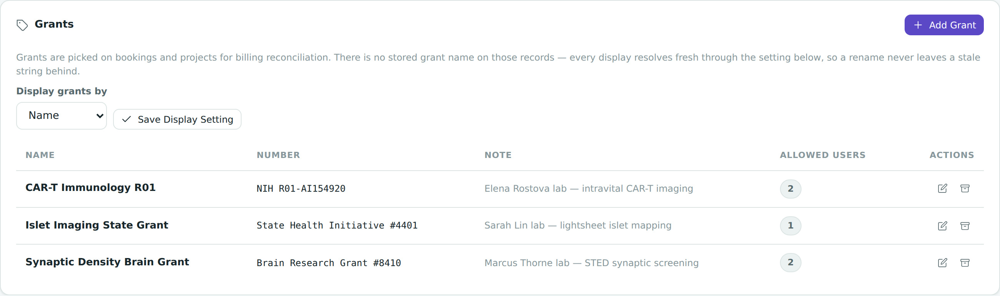
docs/screenshots/53-grants-settings.pngInstruments name their supervising staff 1.6.0
The roadmap’s reporting principle is that metrics hang on instruments, not on people — and that starts with knowing who is responsible for each one. Instrument records now carry one or more supervising facility staff, picked with the same token picker bookings use, shown on the Instruments screen. Retired supervisors stay on the record (marked, as everywhere) rather than silently vanishing on the next save.
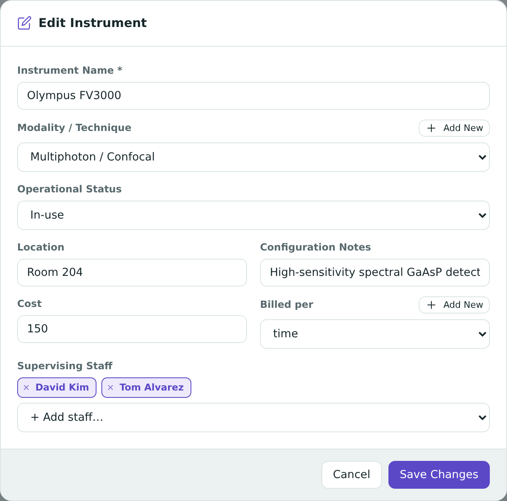
docs/screenshots/54-instrument-supervisors.pngConsulting shows up in Reports — without a consult log 1.6.0
Advisory work is real facility output that never appeared anywhere. The deliberate design is not a consulting log — a per-person record of every conversation reads as surveillance and discourages people from approaching core staff. Instead, the entries that already exist take a category — sync, consult, training, assisted session — and Reports counts consult-tagged sessions per instrument and per month. The vocabulary is extensible like the app’s other dropdowns, and the tag rides along into the meeting exports.

docs/screenshots/55-consults-report.pngReports: how much the scopes get used, and where staff time goes 1.5.1
Every booking already recorded which instrument was held, for how long, and which facility staff worked it. Nothing read that back in aggregate. Reports & Utilization does: pick a date range and get booked hours and revenue per instrument, hours per staff member, a staff × instrument breakdown, and spend per project and per lab — exportable to XLSX.
Two numbers are deliberately kept apart. Hours worked is the real time; hours billed applies the 1-hour minimum and rounds up to whole hours, exactly as the booking calculator does. One is workload, the other is the invoice, and a facility needs both.
Cancelled bookings are handled the way the rest of the app already handles them: their hours drop out entirely, because a cancellation frees the slot and the instrument was never held — while their charge counts only if it was retained rather than waived. Both rules are printed under the tables they govern, so a total can always be reconciled against its rows. Retired staff, retired instruments and archived projects still appear; keeping them was the whole point.

The calendar was a day out, east of Greenwich fixed
A booking made on 9 September showed up in the cell captioned 9, but opened as 8 September. The edit form was right the whole time — it reads the stored date directly. The calendar was captioning each cell with the local day number while looking that cell’s bookings up under a UTC date string, and at a UTC+ offset local midnight falls on the previous UTC day. Replaying the grid under Node, all 35 cells disagreed with their own caption at Asia/Jerusalem and Europe/Paris, and none did at UTC or America/Los_Angeles — which is why it took a user east of Greenwich to notice.
The same wrong date fed click-to-book, so clicking an empty cell opened a booking on the day before. The month’s own query bounds were shifted too, quietly leaving the last day of the visible grid out of its results. All of it now goes through one local-date helper, and two further places that shared the bug — the dashboard’s 30-day milestone window and a project’s overdue flag — are fixed with it.
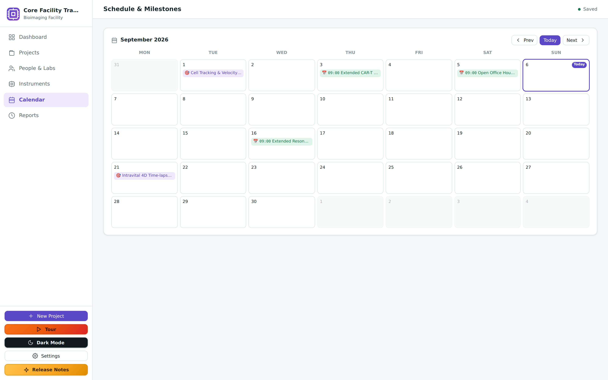
Facility Staff, spelled out — and no longer able to vanish changed
A booking has two people fields on purpose: Assign People is the researchers the session is for, never billed and scoped to the booking’s group; Assign Facility Staff is the core staff running it, billed by the hour. What the app never said out loud is how it decides who is which — a person appears in the staff picker for exactly one reason, the Facility Staff box on their own record. Not their role, not their group. Both forms now say so, the wording is consistent throughout (it used to alternate between “Core Staff” and “Facility Staff”), and the People list gains a Facility Staff column and filter. No separate staff group is needed to make staff assignable.
Writing that down surfaced a real bug. The staff picker only ever listed people currently flagged as staff, and saving a booking rebuilds its staff rows from whatever the form shows — so un-ticking the box on someone silently deleted them from every booking they had already worked, along with the billing line behind it, on that booking’s next save. Reproduced in a browser: a re-save took the staff table from one row to none and a $190 line with it. The picker now keeps anyone already assigned, exactly as it already did for retired staff, while still not offering them for new work.

People are retired, and every record they touched stays new
The previous release deleted a person and carefully unlinked them from everything on the way out — from project teams, from milestones they owned, from the attendee list of every booking they sat in, from the staff line of every booking they were billed on. That tidiness was the bug. Who actually attended a session is a fact about the session, not a property of someone’s current employment, and a booking’s cost is only auditable while the staff line behind it still exists.
- The dialog counts up precisely where they appear before you decide, and commits to keeping all of it.
- They stop being offered when assigning new work, but stay selected wherever they already are — which matters, because saving a milestone or booking rebuilds its assignees from the form, so a hidden one would be silently dropped.
- Their stored name never changes; “(Retired)” is added at display time, so historical records read back exactly as entered.

docs/screenshots/42-retire-person.pngProjects are archived, billing and all new
A project is the thread tying together who worked on it, which instruments ran, and what was charged. Deleting one destroyed the facility’s record of work it actually did and money it actually billed — so there is no longer a way to do that. Archiving keeps the title, the team, the instruments, the milestones, the files, the custom fields and every booking with its cost snapshot; it only takes the project out of the day-to-day registry.
- The dialog names the billing total it is preserving, so you know what is at stake before you confirm.
- An archived project keeps a banner explaining its state, and Restore brings it straight back.
- The dashboard’s counters and overdue alerts now cover active projects only, so archived work stops raising flags.

docs/screenshots/41-archive-project.pngOut of the way, never out of the record
Retired people and archived projects would clutter a roster that grows for years, so they are hidden from the everyday lists behind a toggle that only appears once there is something to show. Reveal them and they are badged, muted, and offer Restore. Everywhere they form part of a historical record — a booking’s attendees, a milestone’s owners, a project’s team, an exported report — they simply stay, marked for what they are.

docs/screenshots/44-people-retired.pngThe red button is the one that stops you changed
A confirmation dialog exists to prevent an accident, so the choice that prevents it is the one that should catch the eye. Colour is what the eye lands on first, and a red “Confirm” spends that attention advertising the irreversible option. On destructive dialogs the red now belongs to Cancel; the destructive button is styled quietly and says exactly what it will do — Delete, Retire, Archive — rather than a generic “Confirm”, so going through with it is a deliberate read instead of a reflex. Non-destructive confirmations keep the ordinary pairing.

docs/screenshots/38-delete-milestone-confirm.pngA cancelled booking keeps its record and frees its slot new
A booking says the facility held instrument time and staff time on a date, and what that was worth — so cancelling one keeps it logged with its line items, and only releases the slot so someone else can take it. Whether the charge still counts follows from when it was cancelled, because that is what decides whether the facility actually held anything.
- Before the start time — nothing was held, so the charge is dropped from Project Costs.
- After the start time — the slot was held, so the charge stands. Admin Mode offers the three-way choice above to waive it instead; without it, the charge stands and the dialog says so.
- Cancelled bookings are badged in the Meetings and Project Costs cards, struck through on the calendar, and carry a status in every export — a waived charge shows struck through and drops out of the running total, so the total always matches what is actually billed.
- Reinstate puts one back, re-running the double-booking check first, since it starts holding its slot again.
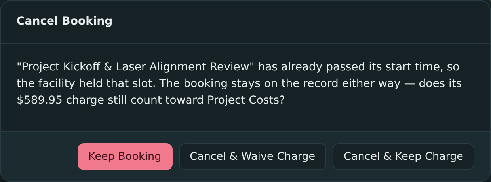
docs/screenshots/37-cancel-booking-admin.png